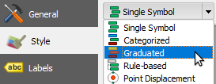

In the Layer Properties, go to the Style tab, and select the Graduated renderer.

For Column select the TOTAL_POP field.
In the Classes tab, click Classify to create the classes interval from the TOTAL_POP field's values.
Click OK to apply changes and close the Layer properties dialog.